Atlassian makes software that helps teams work better together and achieve more. Its products, including Rovo AI, Rovo Studio, Jira, Confluence, Loom, and Trello, are used by over 300,000 companies worldwide to improve collaboration, productivity, and delivery. Teams can also extend and build upon Atlassian products, and go from an idea to innovation with Atlassian’s AI-powered developer platform Forge. Users can build, deploy, and host custom apps on Forge, unlocking deep extensibility with developer-grade tools with built-in security and effortless scaling. Atlassian also has a Marketplace, where partners can sell custom apps and integrations built on Atlassian, which help customers tailor their Atlassian apps to suit their teams' needs.
Atlassian
During the last 12 months at Atlassian, I was deep into AI builder experiences in Rovo AI Studio. Studio is Atlassian's agentic AI builder product to build various enterprise grade platform solutions like Apps, Agents, Automations, using natural language prompts.
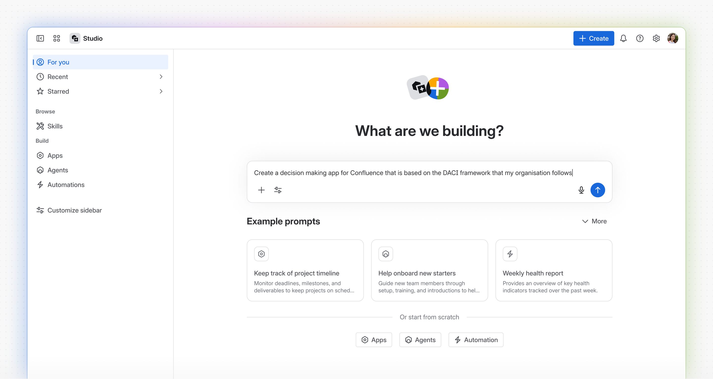
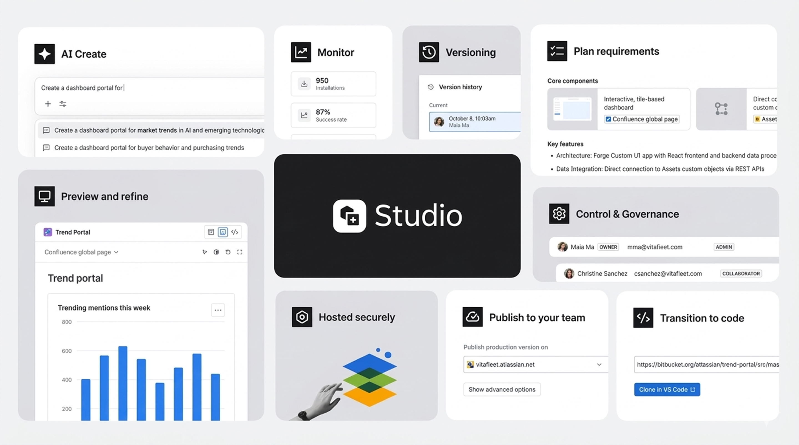
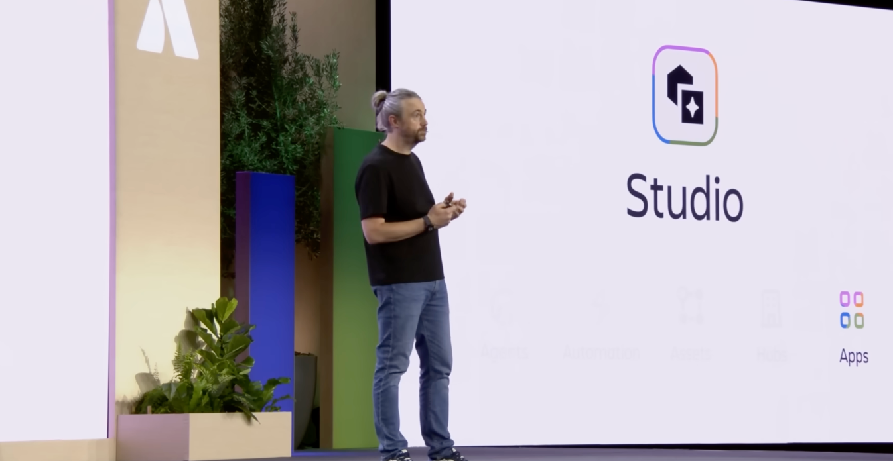
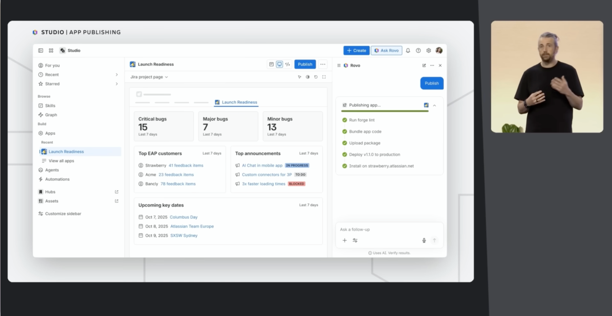
Before Studio, I led & worked on a wide range of strategies, additions, and improvements in the world of apps built on Atlassian, the ecosystem that it creates, & the developer platform Forge that powers it all. I made impactful contributions across various Forge app developer & app user experiences, ranging from platform building blocks, CLI, developer portals, developer documentation, Marketplace, to the app surface areas & interfaces in products like Jira, Confluence. Key projects I worked on during this time:
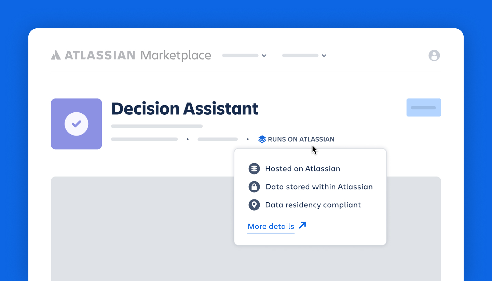
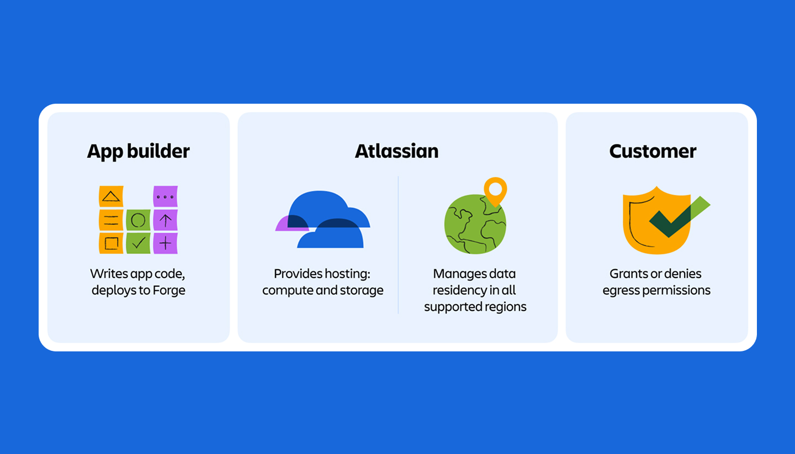
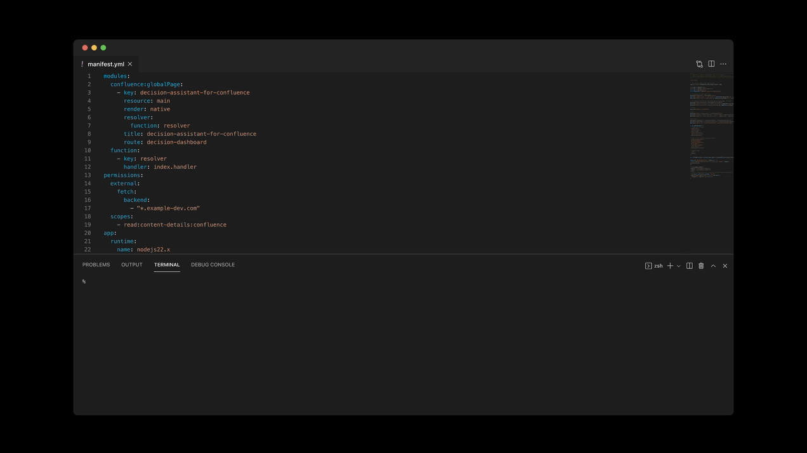
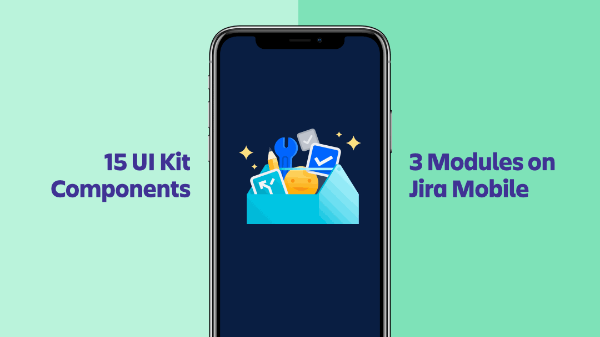
Throughout my time at Atlassian, I proactively worked towards my personal and professional growth by going beyond project work. Here are some highlights:
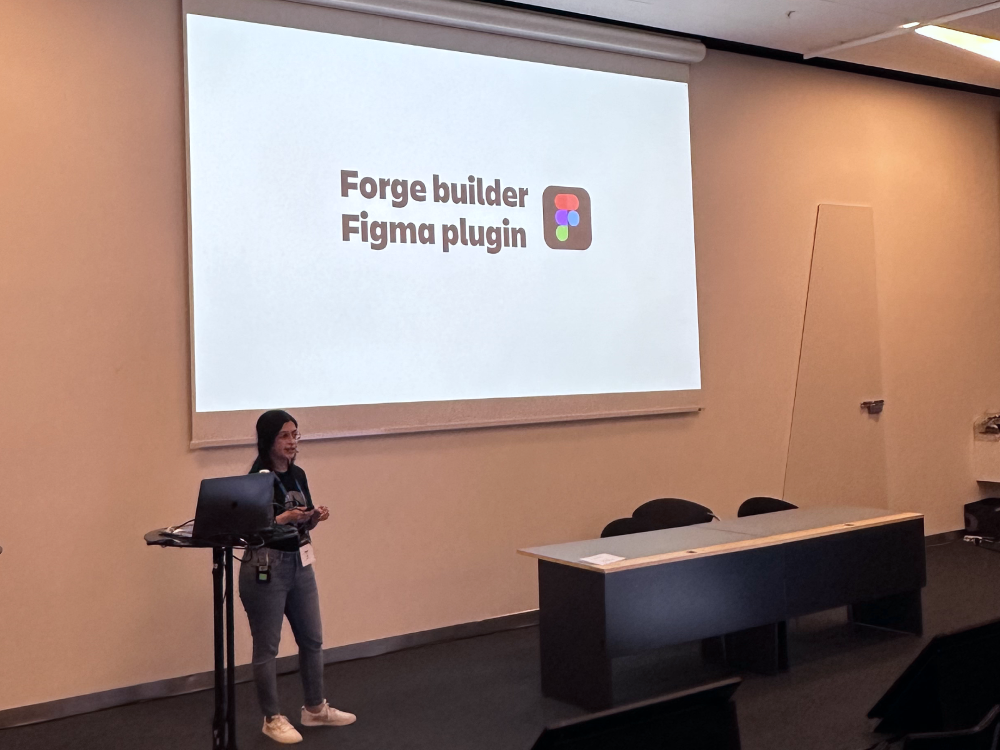
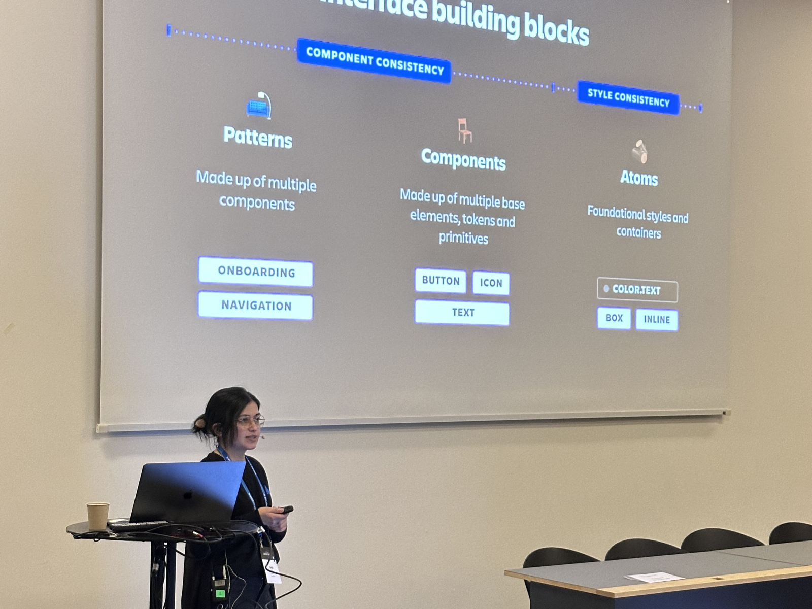
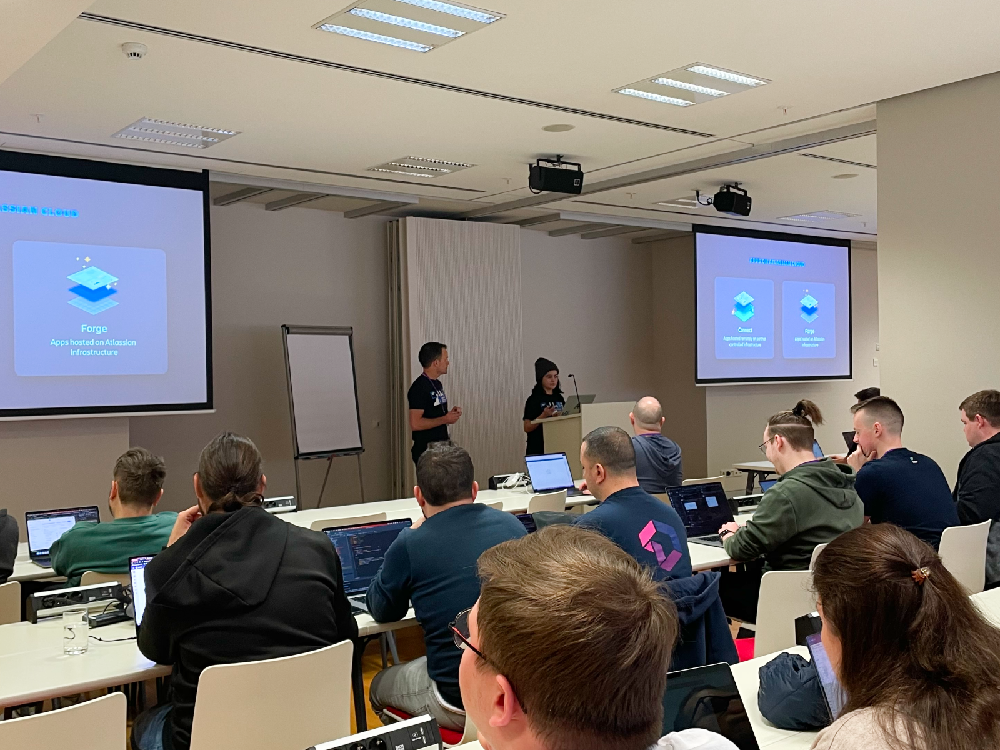